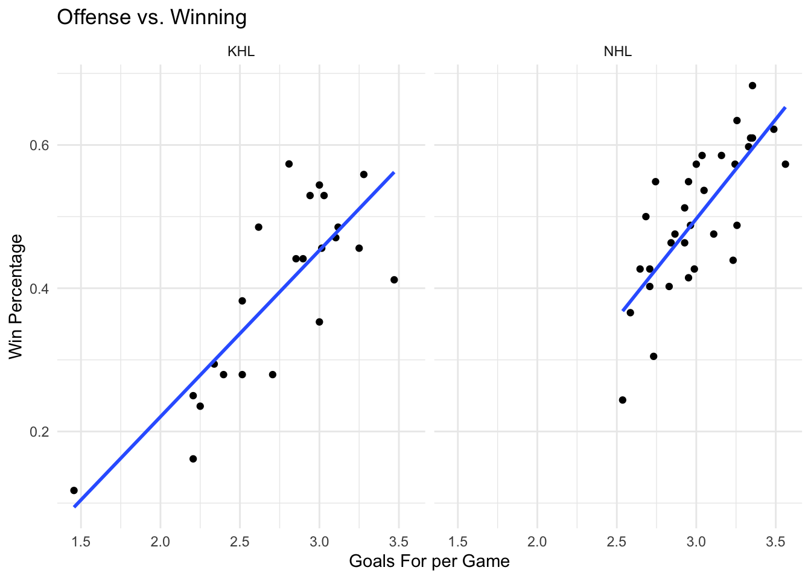
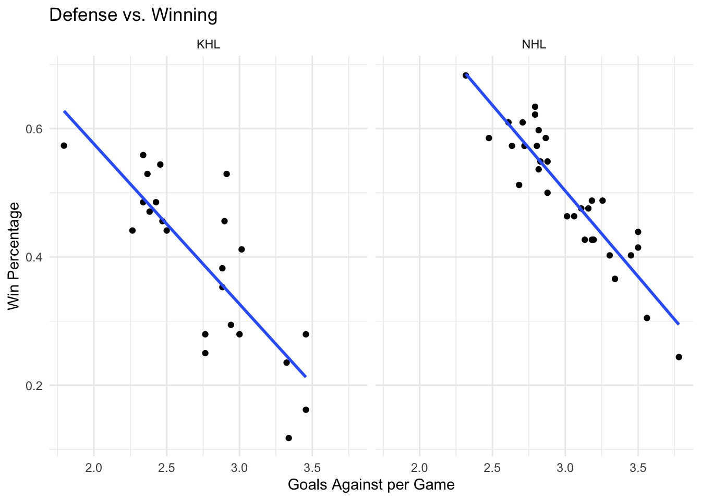

library(tidyverse)NHL vs KHL: Offense, Defense, and Winning
Background
Ice hockey is a team sport where teams try to score goals by shooting a puck into the opponent’s net. In this worksheet, each row of the data represents one professional hockey team during the 2024-25 regular season.
We will compare teams from two leagues:
- NHL: National Hockey League, the major professional hockey league in North America.
- KHL: Kontinental Hockey League, a major professional hockey league based mainly in Eurasia.
The main question is:
Are offense and defense related to winning differently in the NHL and KHL?
We will compare:
- Win percentage: wins divided by games played.
- Goals for per game: goals scored divided by games played. This measures offense.
- Goals against per game: goals allowed divided by games played. This measures defense. Lower is better.
0. Load Packages
1. Load the Data
nhl_2024_25 <- read_csv("nhl_20245.csv")Rows: 32 Columns: 24
── Column specification ────────────────────────────────────────────────────────
Delimiter: ","
chr (2): Team, T
dbl (22): Season, GamesPlayed, Wins, Loses, OT, Points, P%, RW, ROW, S/O Win...
ℹ Use `spec()` to retrieve the full column specification for this data.
ℹ Specify the column types or set `show_col_types = FALSE` to quiet this message.khl_2024_25 <- read_csv("khl_20245.csv")Rows: 23 Columns: 23
── Column specification ────────────────────────────────────────────────────────
Delimiter: ","
chr (2): Team, TIE
dbl (18): №, GamesPlayed, Wins, OTW, SOW, SOL, OTL, Loses, Points, SOA, SO,...
time (3): TIE/G, TIEN, TIEN/G
ℹ Use `spec()` to retrieve the full column specification for this data.
ℹ Specify the column types or set `show_col_types = FALSE` to quiet this message.2. Create Comparable Variables
We use mutate() and then select() to keep only the variables needed for the analysis.
nhl_clean <- nhl_2024_25 |>
mutate(
league = "NHL",
team = Team,
WinPerc = Wins / GamesPlayed,
GF_pg = GF / GamesPlayed,
GA_pg = GA / GamesPlayed
) |>
select(league, team, WinPerc, GF_pg, GA_pg)
khl_clean <- khl_2024_25 |>
mutate(
league = "KHL",
team = Team,
WinPerc = Wins / GamesPlayed,
GF_pg = GF / GamesPlayed,
GA_pg = GA / GamesPlayed
) |>
select(league, team, WinPerc, GF_pg, GA_pg)
hockey <- bind_rows(nhl_clean, khl_clean)We divide by games played because the leagues may not have the exact same schedule length. Per-game variables make the comparison fairer than total goals.
The cleaned dataset can also be saved for the Minitab version of this activity:
write_csv(hockey, "hockey_clean_20245.csv")3. Offense vs Winning
ggplot(data = hockey, aes(x = GF_pg, y = WinPerc)) +
geom_point() +
geom_smooth(method = "lm", se = FALSE) +
facet_wrap(~league) +
labs(
title = "Offense vs. Winning",
x = "Goals For per Game",
y = "Win Percentage") +
theme_minimal()`geom_smooth()` using formula = 'y ~ x'
The graph shows a positive relationship in both leagues. Teams that score more goals per game usually have higher win percentages. The strength of the pattern may differ by league, but the overall direction is positive.
4. Defense vs Winning
ggplot(data = hockey, aes(x = GA_pg, y = WinPerc)) +
geom_point() +
geom_smooth(method = "lm", se = FALSE) +
facet_wrap(~league) +
labs(
title = "Defense vs. Winning",
x = "Goals Against per Game",
y = "Win Percentage") +
theme_minimal()`geom_smooth()` using formula = 'y ~ x'
The graph shows a negative relationship in both leagues. Teams that allow more goals per game usually have lower win percentages. In hockey terms, stronger defense is associated with winning more often.
5. Correlation Summary
hockey |>
group_by(league) |>
summarise(
corr_offense = cor(GF_pg, WinPerc, use = "complete.obs"),
corr_defense = cor(GA_pg, WinPerc, use = "complete.obs"))# A tibble: 2 × 3
league corr_offense corr_defense
<chr> <dbl> <dbl>
1 KHL 0.807 -0.812
2 NHL 0.762 -0.915The offense correlation should be positive because scoring more goals is usually connected with winning more games.
6. Reflection Questions.
- Does offense seem related to winning? Use evidence from the graph or correlation table.
Yes. In both leagues, teams that score more goals per game tend to have higher win percentages, so the offense relationship is positive.
- Does defense seem related to winning? Use evidence from the graph or correlation table.
Yes. In both leagues, teams that allow fewer goals per game tend to have higher win percentages, so the defense relationship is negative.
- Which relationship appears stronger in each league: offense with winning, or defense with winning?
Answers may vary depending on the exact correlation values. A good answer should compare the absolute values of the correlations. The relationship with the larger absolute correlation is the stronger linear relationship.
- Pretend you are an analyst for a hockey team. Based on this analysis, would you recommend that the team focus more on improving offense, improving defense, or balancing both? Explain your recommendation using the results.
A reasonable recommendation is to balance both, but place more attention on the variable with the stronger relationship in that team’s league. For example, if goals against per game has the stronger absolute correlation with win percentage, the analyst could recommend improving defensive structure, goaltending, or penalty killing. If goals for per game is stronger, the analyst could recommend improving shot creation and offensive efficiency.
- Why should we be careful about making a strong conclusion from this analysis?
This analysis uses only one season and only shows correlation. It does not prove that offense or defense directly causes more wins, and it does not account for other important factors such as injuries, goalie performance or strength of schedule.